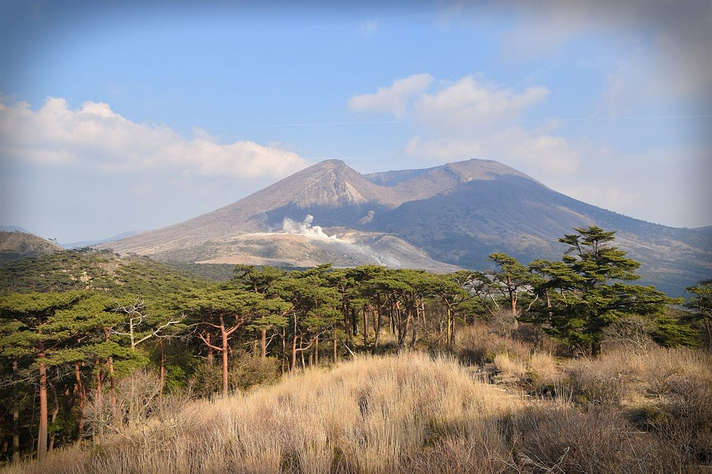
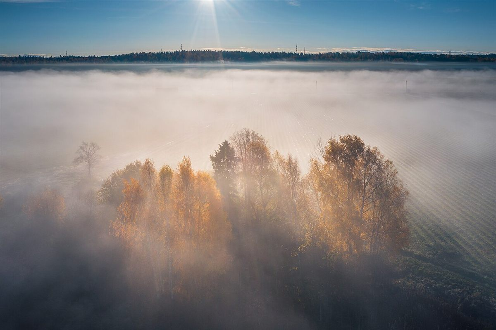
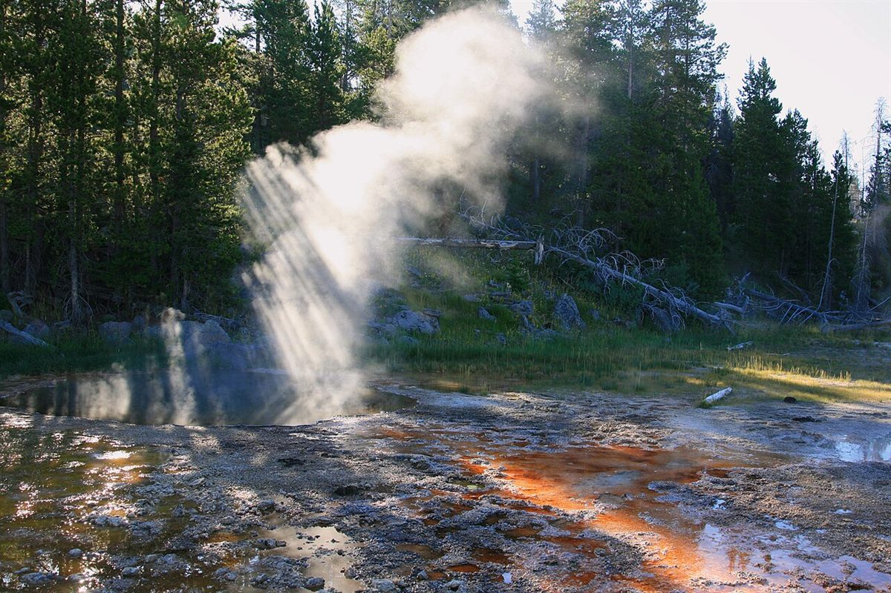
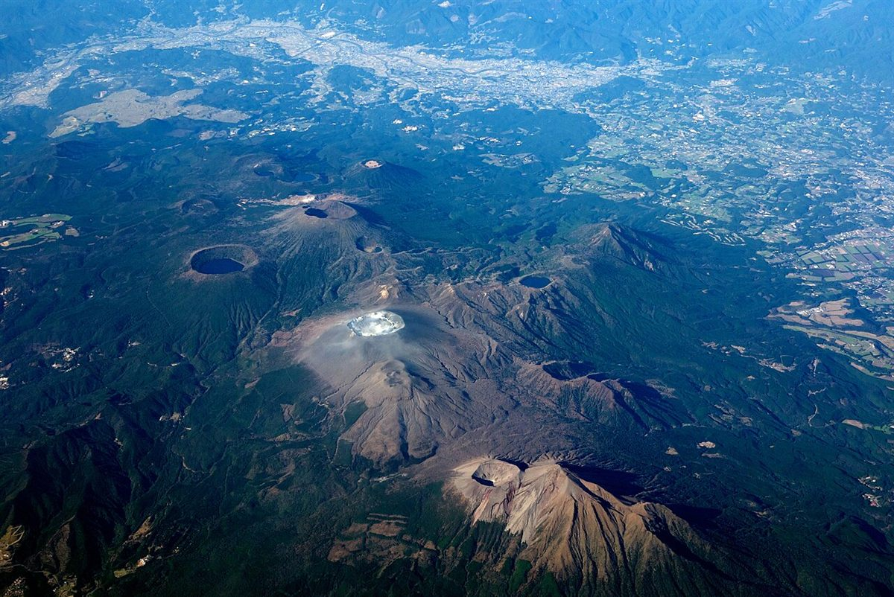

第4章 お店について
お店について
基本情報
| 店名 | ブック&カフェ森や |
|---|---|
| 所在地 | 〒899-4201 鹿児島県霧島市霧島田口2595 107 |
| 電話 | 080-3182-5474 |
| @moriya_kiri | |
| 営業時間 | 準備中(お問い合わせください) |
| 定休日 | 準備中(お問い合わせください) |
| 席数 | 準備中(お問い合わせください) |
| 店名の由来 | お問い合わせください |
この見本のコンセプト(制作側の案)
「ひらく。ページも、朝も。」は、この見本サイトを作った制作側が考えた案です。店舗が掲げている方針やコンセプトではありません。
ブックカフェという店名から、本の約束事である「章立て」「目次」「栞」「ページ番号」をサイトの構成に取り入れ、ページをめくるように読み進められる形にしました。色合いは、地名の「霧島」の「霧」の字から着想した、薄い霧のような灰緑色を基調にしています。
店主様のご意向に合わせて、言葉も構成も差し替えることができます。
霧島という地域
霧島は、山と温泉で知られる地域です。これは霧島地域についての一般的な紹介であり、お店の周辺の様子をご案内するものではありません。お店の周辺の様子は、お問い合わせください。




スタッフ
準備中(お問い合わせください)